This tutorial introduces descriptive statistics — the methods we use to summarise, organise, and communicate what a dataset contains. Before we can test hypotheses or draw inferences about populations, we need to understand and describe what our data actually look like. Descriptive statistics provide the tools to do exactly that.
Descriptive statistics help us understand the main features of a dataset: its central tendency (where the data cluster), its variability (how spread out the values are), and its distribution (the shape of the data). These summaries offer valuable insights for analysing and interpreting quantitative data across all domains, including linguistics and the humanities (Bickel and Lehmann 2012; Thompson 2009).
This tutorial is aimed at beginners and intermediate R users. The goal is not to provide a complete analysis but to showcase selected, practically useful methods for describing and summarising data, illustrated with real and realistic linguistic examples.
Prerequisite Tutorials
Before working through this tutorial, we recommend familiarity with the following:
To see why data summaries are useful, consider the following scenario. You are teaching two different classes in the same school, at the same grade level. Both classes take the same exam. After grading, someone asks: “Which class performed better?” You could say: “Class A had 5 Bs, 10 Cs, 12 Ds, and 2 Fs, while Class B had 2 As, 8 Bs, 10 Ds, and 4 Fs” — but this answer is unsatisfying and hard to compare.
Descriptive statistics allow you to summarise complex datasets in just a few numbers or words. This is the practical power of descriptive statistics: they compress data without losing its essential character.
What This Tutorial Covers
Statistics can be divided into two main branches:
Descriptive statistics: Describes and visualises data (this tutorial)
Inferential statistics: Tests hypotheses and draws conclusions about populations from samples
This tutorial covers:
Measures of central tendency — mean, median, mode, geometric mean, harmonic mean
Measures of variability — range, IQR, variance, SD, SE
Once installed, load the packages as shown below. We also set two global options that suppress scientific notation and prevent automatic factor conversion.
Code
# set global options options(stringsAsFactors =FALSE) # no automatic data transformation options("scipen"=100, "digits"=12) # suppress scientific notation # load packages library(boot) library(DescTools) library(dplyr) library(stringr) library(ggplot2) library(flextable) library(ggpubr) library(psych) library(Rmisc) library(checkdown)
Measures of Central Tendency
A measure of central tendency is a single value that represents the “typical” or “central” value in a distribution. In linguistics and the language sciences, three measures are particularly important: the mean, the median, and the mode(Gaddis and Gaddis 1990).
Two further measures — the geometric mean and the harmonic mean — are occasionally relevant for specific types of data and are briefly covered below.
Choosing the Right Measure
The appropriate measure of central tendency depends on:
The type of variable (nominal, ordinal, interval, ratio)
The distribution of the data (normal vs. skewed; presence of outliers)
The purpose of the summary
The table below gives an overview.
Measure
When to Use
(Arithmetic) mean
Numeric variables with approximately normal distributions; most common measure of central tendency
Median
Numeric or ordinal variables with non-normal distributions, skew, or influential outliers
Mode
Nominal and categorical variables; also useful for any variable to identify the most frequent value
Note: Both distributions above have a mean of 5, but their shapes are very different. This illustrates that the mean alone does not fully describe a distribution — measures of variability are also essential.
A Worked Example: Sentence Length in Moby Dick
Suppose we want to calculate the mean sentence length (in words) in the opening paragraph of Herman Melville’s Moby Dick. We first tabulate the sentences and their lengths:
Sentences
Words
Call me Ishmael.
3
Some years ago — never mind how long precisely — having little or no money in my purse, and nothing particular to interest me on shore, I thought I would sail about a little and see the watery part of the world.
40
It is a way I have of driving off the spleen, and regulating the circulation.
15
Whenever I find myself growing grim about the mouth; whenever it is a damp, drizzly November in my soul; whenever I find myself involuntarily pausing before coffin warehouses, and bringing up the rear of every funeral I meet; and especially whenever my hypos get such an upper hand of me, that it requires a strong moral principle to prevent me from deliberately stepping into the street, and methodically knocking people's hats off — then, I account it high time to get to sea as soon as I can.
87
To calculate the mean, we divide the total word count by the number of sentences:
# create vector of word counts per sentence sentence_lengths <-c(3, 40, 15, 87) # calculate mean mean(sentence_lengths)
[1] 36.25
Limitation of the Mean: Sensitivity to Outliers
The mean is strongly pulled towards extreme values. In our example, the 87-word sentence dramatically inflates the mean compared to the shorter sentences. When data contain outliers or are skewed, the median is often a more representative measure of central tendency.
Exercises: The Mean
Q1. What is the arithmetic mean of: 1, 2, 3, 4, 5, 6?
Q2. Which R function calculates the arithmetic mean of a numeric vector?
Q3. A corpus contains five texts with the following word counts: 200, 250, 210, 180, and 1500. Why might the mean NOT be the best summary of typical text length here?
The Median
The median is the middle value when data are arranged in ascending or descending order. Exactly 50% of values lie below the median and 50% lie above it. The median is more robust than the mean because it is not affected by extreme values.
\[\text{median}(x) = \begin{cases} x_{\frac{n+1}{2}} & \text{if } n \text{ is odd} \\ \frac{1}{2}\left(x_{\frac{n}{2}} + x_{\frac{n}{2}+1}\right) & \text{if } n \text{ is even} \end{cases}\]
A Linguistic Example: Speaker Age in the ICE-Ireland Corpus
Consider the age distribution of speakers in the private dialogue section of the Irish component of the International Corpus of English (ICE-Ireland):
Age
Counts
0–18
9
19–25
160
26–33
70
34–41
15
42–49
9
50+
57
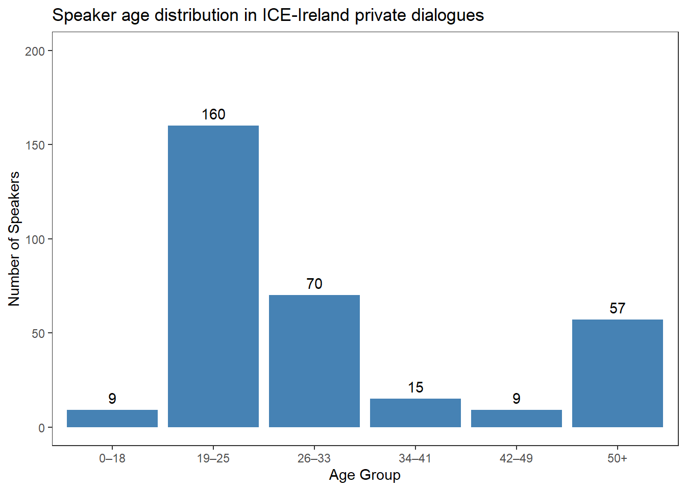
The age groups are ordinal: they have a natural order (young to old) but we cannot assume equal intervals between groups. The appropriate measure is the median, not the mean.
To find the median, we create a vector where each speaker’s age rank appears as many times as there are speakers in that group:
The median rank is 2, corresponding to the 19–25 age group. This tells us the median speaker in ICE-Ireland private dialogues is between 19 and 25 years old.
Mean vs. Median: When Does It Matter?
The mean and median agree when distributions are symmetric. They diverge when distributions are skewed or contain outliers:
Situation
Preferred measure
Normal distribution, no outliers
Mean
Skewed distribution (e.g., text lengths, corpus frequencies)
Median
Ordinal variables (e.g., Likert scales, age groups)
Median
Influential extreme values
Median
In corpus linguistics, frequency data is almost always right-skewed: a few very frequent items dominate. The median is therefore often more informative than the mean for frequency distributions.
Exercises: The Median
Q1. What is the median of: 1, 2, 3, 4, 5, 6?
Q2. A researcher has reaction time data with several extremely slow responses (>2000ms). Which measure of central tendency should she report as the primary summary?
Q3. When is the median equal to the mean?
The Mode
The mode is the most frequently occurring value (or category) in a distribution. It is the only measure of central tendency that can be used with nominal (categorical) variables.
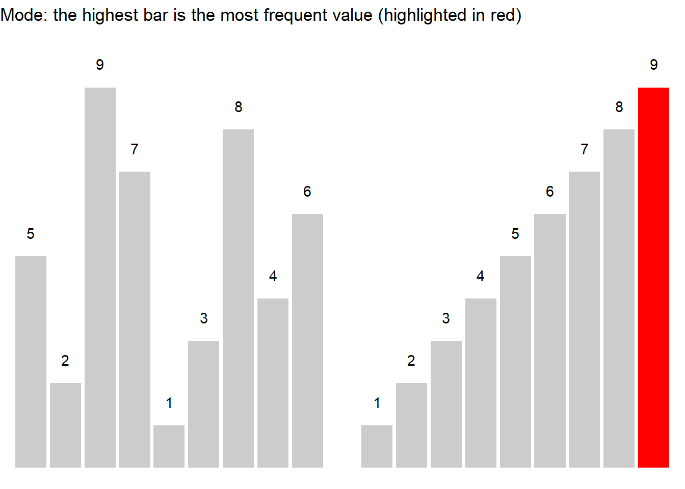
Example: Speaker Residence in ICE-Ireland
CurrentResidence
Speakers
Belfast
98
Down
20
Dublin (city)
110
Limerick
13
Tipperary
19
The mode is Dublin (city), with 110 speakers — the single largest group. In R:
Code
# create a factor with current residences residence <-c( rep("Belfast", 98), rep("Down", 20), rep("Dublin (city)", 110), rep("Limerick", 13), rep("Tipperary", 19) ) # calculate mode: find which level occurs most frequently names(which.max(table(residence)))
[1] "Dublin (city)"
R Has No Built-in mode() Function for Statistics
R’s built-in mode() function returns the storage mode of an object (e.g., “numeric”, “character”) — not the statistical mode. To find the most frequent value, use names(which.max(table(x))) as shown above.
Caution: which.max() returns only the first maximum. If two categories have equal frequency (a bimodal distribution), only one is returned. Always inspect the full frequency table (table(x)) to detect ties.
Exercises: The Mode
Q1. For which type of variable is the mode the ONLY appropriate measure of central tendency?
Q2. A corpus linguist finds that ‘the’ appears 4000 times, ‘a’ appears 2500 times, and ‘of’ appears 1800 times in a sample. What is the mode of word frequency in this sample?
When Measures of Centrality Diverge: A Cautionary Example
The following example illustrates why the choice of measure matters. Consider discourse particle use (per 1,000 words) across five speakers in two different corpora:
Corpus
Speaker
Frequency
C1
A
11.4
C1
B
5.2
C1
C
27.1
C1
D
9.6
C1
E
13.7
C2
A
0.2
C2
B
0.0
C2
C
1.1
C2
D
65.3
C2
E
0.4
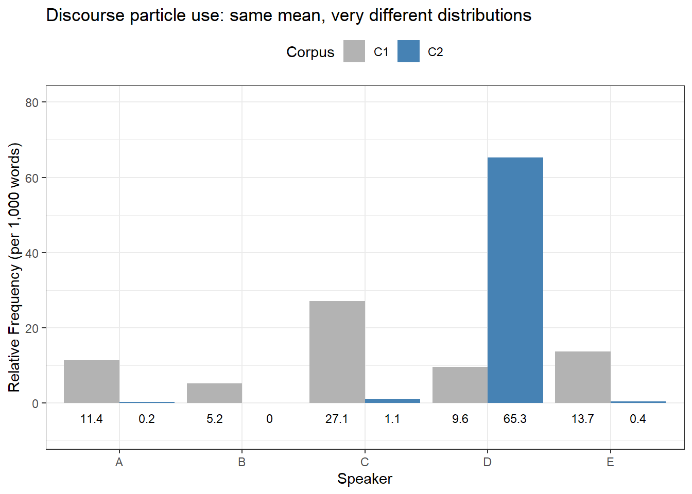
Both corpora have a mean of 13.4 particles per 1,000 words — identical by the mean. But the distributions are entirely different:
Corpus 1: Values are fairly evenly distributed across speakers (range: 5.2–27.1)
Corpus 2: Four speakers use almost no particles (0.0–1.1), but Speaker D uses them at an extremely high rate (65.3), inflating the mean
The median reveals this difference clearly:
- Corpus 1 median: 11.4 (reflects the typical speaker)
- Corpus 2 median: 0.4 (reflects the typical speaker — very different from the mean of 13.4!)
Key Lesson
Always report the median alongside the mean, especially when:
The distribution is known or suspected to be non-normal
You are working with corpus frequency data (almost always right-skewed)
Outliers may be present
The variable is ordinal rather than truly numeric
The mean and median together tell a richer story than either alone.
Geometric Mean
The geometric mean is used for dynamic processes where later values depend on earlier ones — particularly for growth rates and multiplicative processes.
At 40 kph both ways, the trip takes the same total time (3 hours) as the original unequal speeds. The arithmetic mean (45 kph) would give the wrong answer: at 45 kph both ways, the trip would only take 2h40min.
Measures of Variability
Measures of variability describe how spread out or dispersed values are around the central tendency. Two datasets can have identical means but very different distributions — as the Moscow/Hamburg temperature example below illustrates.
Why Variability Matters
Without variability measures, central tendency statistics alone are misleading. Two cities can have the same annual mean temperature but vastly different climates. Two speakers can have the same mean utterance length but very different speaking styles. Always report a measure of variability alongside any measure of central tendency.
Month
Moscow
Hamburg
January
-5.00
7.00
February
-12.00
7.00
March
5.00
8.00
April
12.00
9.00
May
15.00
10.00
June
18.00
13.00
July
22.00
15.00
August
23.00
15.00
September
20.00
13.00
October
16.00
11.00
November
8.00
8.00
December
1.00
7.00
**Mean**
10.25
10.25
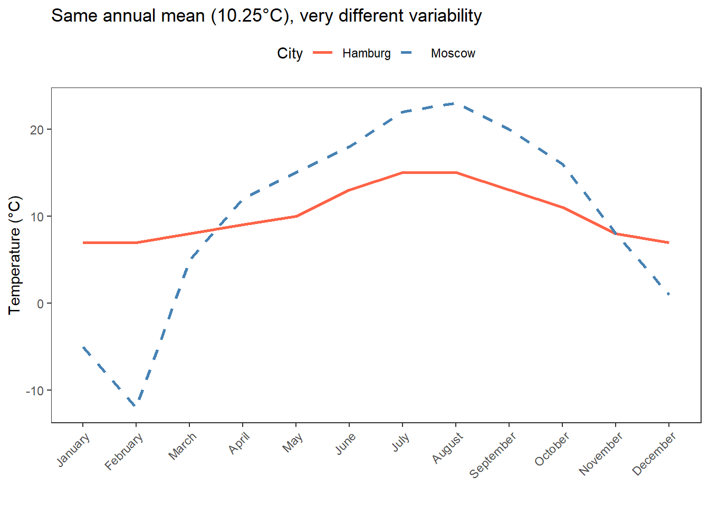
Range
The range is the simplest measure of variability: it reports the minimum and maximum values of a distribution.
Moscow ranges from −12°C to 23°C (a span of 35 degrees), while Hamburg ranges from 7°C to 15°C (a span of only 8 degrees). The range confirms the stark climatic difference.
Limitation of the range: The range only uses the two most extreme values and is therefore highly sensitive to outliers. A single extreme observation dramatically changes the range without representing the bulk of the data.
Interquartile Range (IQR)
The interquartile range (IQR) is the range that encompasses the central 50% of data points. It is calculated as the difference between the third quartile (Q3, 75th percentile) and the first quartile (Q1, 25th percentile).
\[\text{IQR} = Q_3 - Q_1\]
Because the IQR excludes the top and bottom 25% of the data, it is robust to outliers and more informative than the range for skewed distributions.
Code
# full summary including quartiles summary(Moscow)
Min. 1st Qu. Median Mean 3rd Qu. Max.
-12.00 4.00 13.50 10.25 18.50 23.00
The IQR confirms what the range suggested: Moscow has far greater seasonal temperature variability than Hamburg.
Visualising Variability: The Boxplot
The boxplot is the standard visualisation for the IQR. The box spans Q1 to Q3 (the IQR), the middle line marks the median, and the whiskers extend to the most extreme non-outlier values.
Variance
The variance quantifies how much individual values deviate from the mean, on average. It is calculated as the average of the squared deviations from the mean:
The reason we square the deviations is to avoid positive and negative deviations cancelling each other out. We divide by \(n-1\) (rather than \(n\)) to obtain an unbiased estimate of the population variance.
Code
# variance of Moscow temperatures var(Moscow)
[1] 123.659090909
Code
# variance of Hamburg temperatures var(Hamburg)
[1] 9.47727272727
The variance of Moscow temperatures (≈ 123.7) is roughly 13× larger than Hamburg’s (≈ 9.5), reflecting the much greater seasonal fluctuation.
Limitation: The variance is expressed in squared units (°C²), which makes it difficult to interpret directly. The standard deviation addresses this by taking the square root.
Standard Deviation
The standard deviation (SD) is the square root of the variance. It is expressed in the same units as the original data and is by far the most commonly reported measure of variability.
# standard deviation of Moscow temperatures sd(Moscow)
[1] 11.1202109202
Code
# standard deviation of Hamburg temperatures sd(Hamburg)
[1] 3.07851794331
Moscow: SD ≈ 11.12°C — on average, monthly temperatures deviate 11 degrees from the annual mean.
Hamburg: SD ≈ 2.99°C — temperatures stay within about 3 degrees of the mean throughout the year.
Interpreting the Standard Deviation
For a normally distributed variable, approximately:
- 68% of values fall within ±1 SD of the mean
- 95% of values fall within ±2 SD of the mean
- 99.7% of values fall within ±3 SD of the mean
This is the empirical rule (or 68-95-99.7 rule). It provides a practical benchmark for assessing whether a particular value is typical or unusual.
Exercises: Measures of Variability
Q1. What does the IQR measure?
Q2. Why is the standard deviation reported more often than the variance?
Q3. Researcher A reports a mean corpus frequency of 50 per million words (SD = 2). Researcher B reports a mean of 50 per million words (SD = 40). What does the difference in SD tell us?
Q4. For the following two vectors, calculate mean, median, and standard deviation in R. Which vector has higher variability?
The standard error of the mean (SEM) is a measure of how precisely the sample mean estimates the true population mean. It depends on both the standard deviation and the sample size:
\[\text{SE}_{\bar{x}} = \frac{\sigma}{\sqrt{n}}\]
A larger sample size reduces the standard error — larger samples produce more precise estimates of the population mean. This is why replication and large samples matter in empirical research.
To illustrate, we use a dataset of reaction times from a lexical decision task (participants decide whether a letter string is a real word):
RT
State
Gender
429.276
Sober
Male
435.473
Sober
Male
394.535
Sober
Male
377.325
Sober
Male
430.294
Sober
Male
289.102
Sober
Female
411.505
Sober
Female
366.191
Sober
Female
365.792
Sober
Female
334.034
Sober
Female
444.188
Drunk
Male
540.866
Drunk
Male
468.531
Drunk
Male
476.011
Drunk
Male
412.473
Drunk
Male
520.845
Drunk
Female
435.682
Drunk
Female
463.421
Drunk
Female
536.036
Drunk
Female
494.936
Drunk
Female
We can calculate the SEM manually:
Code
# manual calculation of standard error sd(rts$RT, na.rm =TRUE) /sqrt(length(rts$RT[!is.na(rts$RT)]))
[1] 14.7692485022
Or more conveniently, using the describe() function from the psych package:
Code
# describe() from psych provides SE alongside other summary statistics psych::describe(rts$RT, type =2)
vars n mean sd median trimmed mad min max range skew kurtosis
X1 1 20 431.33 66.05 432.88 432.9 60.4 289.1 540.87 251.76 -0.2 -0.13
se
X1 14.77
Standard Error vs. Standard Deviation
These two measures are frequently confused:
Measure
What it describes
Standard deviation (SD)
Variability of individual data points around the mean
Standard error (SE)
Precision of the sample mean as an estimate of the population mean
The SD tells us about the spread of the data. The SE tells us about the precision of our estimate. SE = SD / √n, so larger samples always have smaller SE.
Confidence Intervals
A confidence interval (CI) is a range of values that is likely to contain the true population parameter (typically the mean) with a specified level of confidence (typically 95%).
More precisely: if you repeated your study many times and constructed a 95% CI each time, 95% of those intervals would contain the true population mean. It does not mean “there is a 95% probability the true mean is in this particular interval” (a common misconception).
Confidence intervals are important because they quantify the uncertainty in our estimates and communicate how precisely we can estimate a population value from a sample.
The confidence interval for the mean is calculated as:
\[\bar{x} \pm z \cdot \frac{s}{\sqrt{n}}\]
For a 95% CI with normally distributed data, the z-value is 1.96 (the value that cuts off 2.5% in each tail of the standard normal distribution):
Code
# verify the z-value for 95% CI qnorm(0.975) # 2.5% in the upper tail → z = 1.96
[1] 1.95996398454
A practical example — calculating the 95% CI for a vector of values:
Code
values <-c(4, 5, 2, 3, 1, 4, 3, 6, 3, 2, 4, 1) m <-mean(values) s <-sd(values) n <-length(values) lower <- m -1.96* (s /sqrt(n)) upper <- m +1.96* (s /sqrt(n)) cat("Lower CI:", round(lower, 3), "\n")
Lower CI: 2.302
Code
cat("Mean: ", round(m, 3), "\n")
Mean: 3.167
Code
cat("Upper CI:", round(upper, 3), "\n")
Upper CI: 4.031
Exercises: Confidence Intervals
Q1. What does a 95% confidence interval tell us?
Q2. A researcher finds a 95% CI of [48.2, 51.8] for a mean corpus frequency. What can she conclude?
Q3. Two studies estimate the same mean (50.0), but Study A has CI [45, 55] and Study B has CI [49, 51]. What explains the difference?
Confidence Intervals in R: Multiple Methods
For a Simple Vector
The CI() function from the Rmisc package is the most convenient approach:
Code
Rmisc::CI(rts$RT, ci =0.95)
upper mean lower
462.238192381 431.325800000 400.413407619
Alternatively, use t.test() (which also tests H₀: μ = 0):
Code
stats::t.test(rts$RT, conf.level =0.95)
One Sample t-test
data: rts$RT
t = 29.20431598, df = 19, p-value < 0.0000000000000002220446
alternative hypothesis: true mean is not equal to 0
95 percent confidence interval:
400.413407619 462.238192381
sample estimates:
mean of x
431.3258
Or MeanCI() from DescTools:
Code
DescTools::MeanCI(rts$RT, conf.level =0.95)
mean lwr.ci upr.ci
431.325800000 400.413407619 462.238192381
Bootstrapped Confidence Intervals
Bootstrapping is a powerful, assumption-free alternative. Rather than relying on the formula \(\bar{x} \pm 1.96 \times \text{SE}\) (which assumes normality), bootstrapping repeatedly resamples the data and builds an empirical distribution of the sample mean.
Code
# bootstrapped CI using MeanCI DescTools::MeanCI(rts$RT, method ="boot", type ="norm", R =1000)
mean lwr.ci upr.ci
431.325800000 402.092500763 459.569724437
When to Use Bootstrapped CIs
Bootstrapped confidence intervals are preferable when:
The data are not normally distributed and the sample is small
You cannot assume the parametric formula is appropriate
You want an empirical, data-driven estimate of uncertainty
For large samples, parametric and bootstrapped CIs typically converge. Because bootstrapping is random (resampling), the results will vary slightly between runs. Use a fixed set.seed() for reproducibility.
Code
# manual bootstrapping with the boot package set.seed(42) BootFunction <-function(x, index) { return(c( mean(x[index]), var(x[index]) /length(index) )) } Bootstrapped <-boot( data = rts$RT, statistic = BootFunction, R =1000) # extract bootstrapped mean and 95% CI mean(Bootstrapped$t[, 1])
[1] 430.72580535
Code
boot.ci(Bootstrapped, conf =0.95)
BOOTSTRAP CONFIDENCE INTERVAL CALCULATIONS
Based on 1000 bootstrap replicates
CALL :
boot.ci(boot.out = Bootstrapped, conf = 0.95)
Intervals :
Level Normal Basic Studentized
95% (403.2, 460.7 ) (403.4, 461.1 ) (399.0, 462.5 )
Level Percentile BCa
95% (401.6, 459.2 ) (402.4, 459.7 )
Calculations and Intervals on Original Scale
Confidence Intervals for Grouped Data
Use summarySE() from Rmisc to extract mean and CI by group:
Code
Rmisc::summarySE( data = rts, measurevar ="RT", groupvars ="Gender", conf.interval =0.95)
Gender N RT sd se ci
1 Female 10 421.7544 82.8522922089 26.2001952746 59.2689594071
2 Male 10 440.8972 46.2804393809 14.6351599557 33.1070319225
Confidence Intervals for Nominal (Proportional) Data
When the data are nominal (e.g., did a speaker use a particular construction: yes/no?), we use binomial confidence intervals. Here we test whether 2 successes out of 20 trials differ from a chance level of 0.5:
Code
stats::binom.test( x =2, # observed successes n =20, # total trials p =0.5, # hypothesised probability alternative ="two.sided", conf.level =0.95)
Exact binomial test
data: 2 and 20
number of successes = 2, number of trials = 20, p-value =
0.000402450562
alternative hypothesis: true probability of success is not equal to 0.5
95 percent confidence interval:
0.0123485271703 0.3169827140191
sample estimates:
probability of success
0.1
The BinomCI() function from DescTools offers more method options:
Code
DescTools::BinomCI( x =2, n =20, conf.level =0.95, method ="modified wilson")
est lwr.ci upr.ci
[1,] 0.1 0.0177680755349 0.301033645228
Confidence Intervals for Multinomial Data
When there are more than two nominal categories (e.g., which of several linguistic constructions was chosen), use MultinomCI():
Code
# observed counts for four categories observed <-c(35, 74, 22, 69) DescTools::MultinomCI( x = observed, conf.level =0.95, method ="goodman")
Q1. Calculate the mean and 95% CI for: 1, 2, 3, 4, 5, 6, 7, 8, 9. Which of the following is the correct lower bound of the 95% CI?
Q2. Which method for computing confidence intervals does NOT assume that the data follow a normal distribution?
Data Distributions
One of the most important — and most often neglected — steps in any quantitative analysis is examining the shape of your data distribution. Descriptive statistics like the mean and standard deviation assume (or are sensitive to) specific distributional shapes. Understanding whether your data are symmetric, skewed, or heavy-tailed is essential for choosing the right analysis and reporting your data responsibly.
What Is a Distribution?
A distribution describes how values in a dataset are spread across the possible range of values. Key properties include:
Shape: Is it symmetric, left-skewed, or right-skewed?
Modality: Is there one peak (unimodal) or more (bimodal, multimodal)?
Tails: Are extreme values common (heavy tails) or rare (thin tails)?
Centre and spread: Where do values cluster, and how widely do they range?
Histograms
The histogram is the most fundamental tool for visualising a distribution. It divides the range of values into equal-width bins and counts how many observations fall into each bin.
In R, a histogram is produced with hist() or (recommended) ggplot2:
Code
# simulate a right-skewed corpus frequency distribution set.seed(42) corpus_freq <-rgamma(200, shape =2, rate =0.1) # base R hist(corpus_freq, main ="Corpus word frequencies (simulated)", xlab ="Frequency per million", col ="steelblue", border ="white")
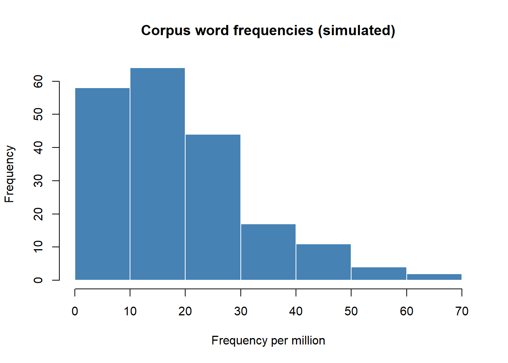
Code
# ggplot2 (more flexible) ggplot(data.frame(x = corpus_freq), aes(x = x)) +geom_histogram(bins =30, fill ="steelblue", color ="white") +theme_bw() +labs(title ="Corpus word frequencies (simulated)", x ="Frequency per million", y ="Count")
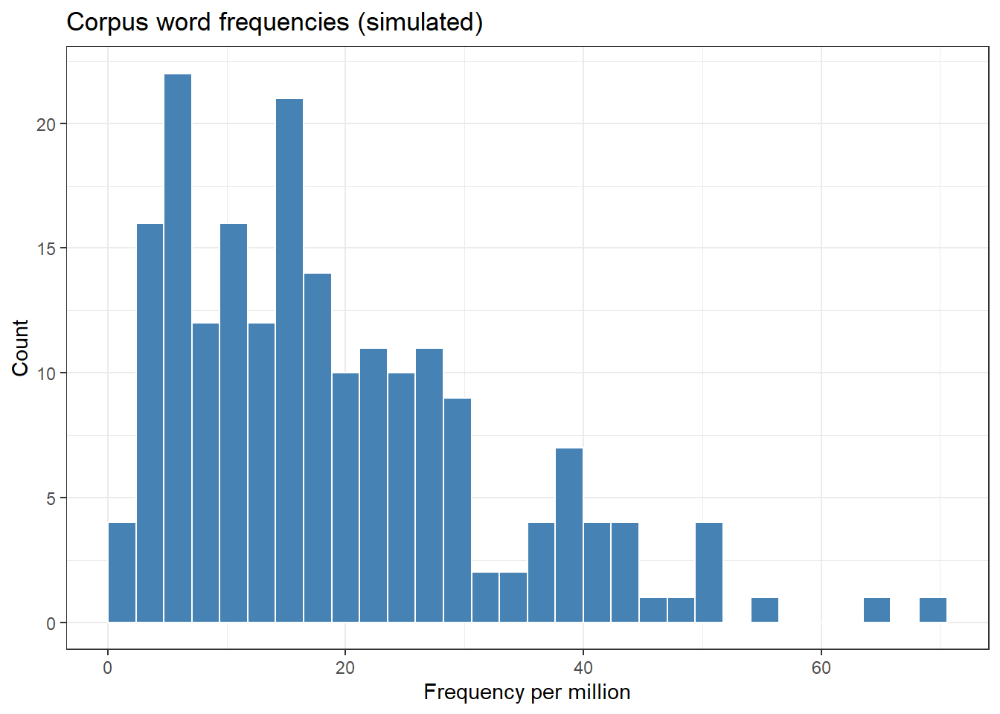
Choosing the Number of Bins
The number of bins (bins in ggplot2, breaks in base R) dramatically affects the appearance of a histogram. Too few bins: the shape is obscured. Too many bins: noise dominates the signal.
Start with bins = 20–30 and adjust visually
Rule of thumb: Sturges’ rule suggests \(k = \lceil \log_2 n \rceil + 1\) bins
The breaks = "FD" option in hist() uses the Freedman-Diaconis rule, which is robust to outliers
Density Plots
A density plot is a smoothed version of the histogram. It estimates the underlying probability density function of the data using kernel density estimation (KDE). Density plots are particularly useful for comparing multiple distributions on the same plot.
Code
set.seed(42) # simulate reaction times for two conditions rt_data <-data.frame( RT =c(rnorm(200, 450, 80), rnorm(200, 520, 100)), Condition =rep(c("Congruent", "Incongruent"), each =200) ) rt_data |>ggplot(aes(x = RT, fill = Condition, color = Condition)) +geom_density(alpha =0.4, linewidth =0.8) +theme_bw() +scale_fill_manual(values =c("steelblue", "tomato")) +scale_color_manual(values =c("steelblue", "tomato")) +labs(title ="Reaction time distributions: Congruent vs. Incongruent (simulated)", x ="Reaction Time (ms)", y ="Density") +theme(legend.position ="top", panel.grid.minor =element_blank())
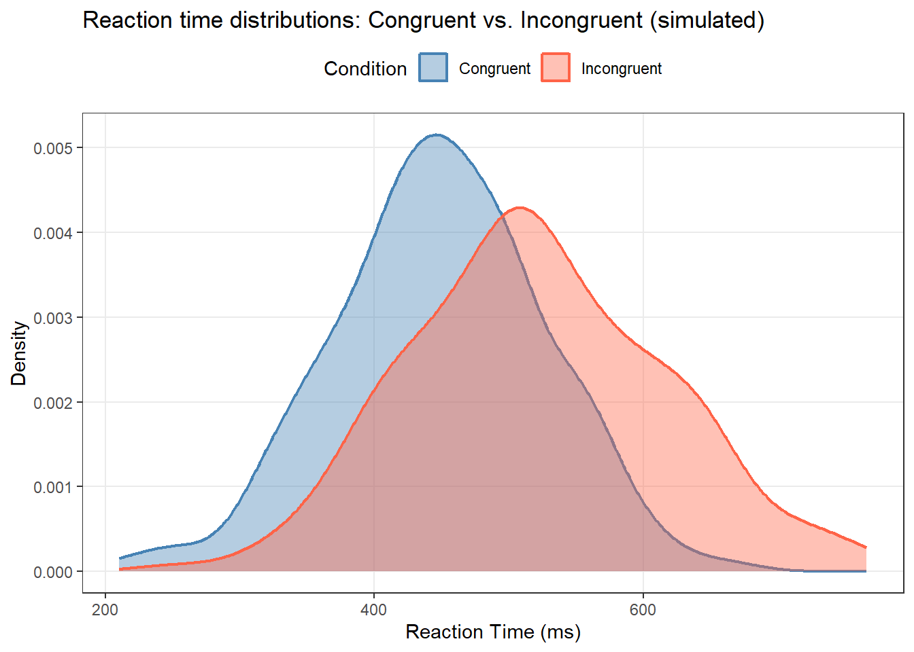
The density plot clearly shows that the Incongruent condition produces slower (rightward-shifted) reaction times with greater variability — a classic interference effect.
Q-Q Plots: Testing for Normality Visually
A Q-Q plot (quantile-quantile plot) compares the quantiles of your data against the quantiles expected from a theoretical normal distribution. If the data are normally distributed, the points fall along a straight diagonal line.
Code
set.seed(42) # normal data: points should follow the diagonal normal_data <-rnorm(200, mean =0, sd =1) # skewed data: points will curve away from the diagonal skewed_data <-rgamma(200, shape =1.5, rate =1) par(mfrow =c(1, 2)) qqnorm(normal_data, main ="Q-Q plot: Normal data", pch =16, col ="steelblue") qqline(normal_data, col ="red", lwd =2) qqnorm(skewed_data, main ="Q-Q plot: Skewed data", pch =16, col ="tomato") qqline(skewed_data, col ="red", lwd =2)
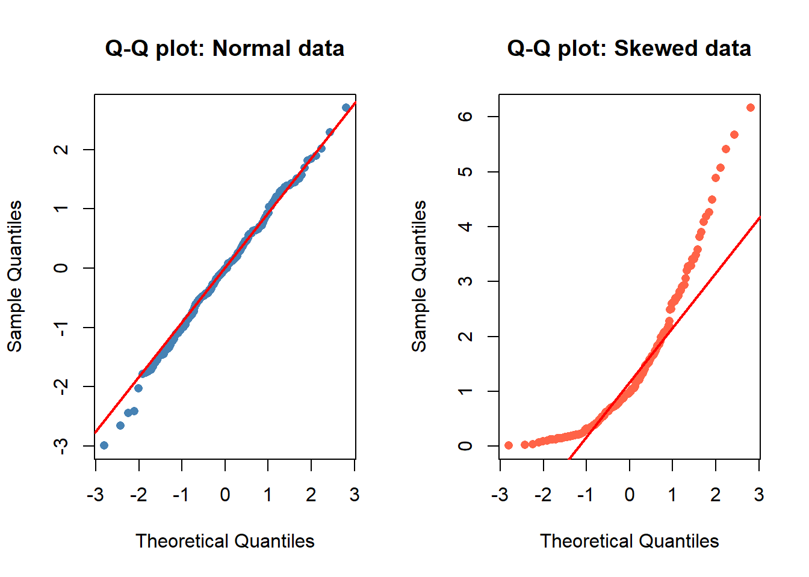
Code
par(mfrow =c(1, 1))
How to read a Q-Q plot
Points on the line: data are consistent with normality
Points curving upward at the right tail: right skew (long upper tail)
Points curving downward at the left tail: left skew
Points deviating at both tails in S-shape: heavy tails (leptokurtosis)
Q-Q Plot vs. Shapiro-Wilk: Which to Use?
The Shapiro-Wilk test formally tests H₀: “the data are normally distributed.” However, for large samples (n > ~100), Shapiro-Wilk detects trivially small deviations as “significant” — deviations too small to affect any practical analysis.
Best practice: Use Q-Q plots for visual assessment. Use Shapiro-Wilk as a secondary check, and interpret the p-value alongside effect size and visual inspection, not as the sole decision criterion.
Code
# Shapiro-Wilk normality test shapiro.test(normal_data) # should not reject normality
Shapiro-Wilk normality test
data: normal_data
W = 0.9966720515, p-value = 0.946418142
Code
shapiro.test(skewed_data) # should reject normality
Shapiro-Wilk normality test
data: skewed_data
W = 0.8583236518, p-value = 0.00000000000111047774
Skewness
Skewness measures the asymmetry of a distribution. A perfectly symmetric distribution has skewness = 0.
In R, skewness is calculated using e1071::skewness() or psych::describe():
Code
library(e1071) # right-skewed corpus frequency data set.seed(42) corpus_freq <-rgamma(300, shape =1.5, rate =0.05) e1071::skewness(corpus_freq)
[1] 1.31934302261
Code
# psych::describe() gives skewness alongside other stats psych::describe(corpus_freq)
vars n mean sd median trimmed mad min max range skew kurtosis
X1 1 300 28.48 23.83 21.05 25.09 20.09 0.23 123.3 123.07 1.32 1.6
se
X1 1.38
Skewness in Linguistics
Many linguistic variables are right-skewed (positive skewness):
Word frequencies: A few words (function words) are very frequent; most words are rare
Sentence lengths: Most sentences are moderate length; some are very long
Reaction times: Most responses are fast; occasional very slow responses stretch the upper tail
Pause durations: Most pauses are short; some are very long
This is why the median and non-parametric statistics are often preferred in corpus linguistics.
Kurtosis
Kurtosis measures the “peakedness” or “tail heaviness” of a distribution relative to the normal distribution. Excess kurtosis is reported relative to the normal distribution (which has kurtosis = 3; excess kurtosis = 0).
Q1. A histogram of word frequencies in a corpus shows a very long right tail, with most words occurring fewer than 10 times but a few function words occurring thousands of times. What does this indicate?
Q2. In a Q-Q plot, the data points follow a straight diagonal line closely in the middle but curve sharply upward at the right end. What does this indicate?
Q3. Which function in R calculates the skewness of a numeric vector?
Comprehensive Data Summaries
Before running any statistical analysis, it is good practice to generate a comprehensive summary of your dataset. This reveals the structure, scale, and quirks of your variables — and often uncovers data quality issues (missing values, impossible values, unexpected distributions) before they cause problems in analysis.
The summary() Function
R’s built-in summary() is the quickest way to get an overview of a dataset. It automatically applies the appropriate summary to each variable type:
Code
# create a small linguistic dataset set.seed(42) linguistics_data <-data.frame( speaker_id =paste0("S", 1:50), age =round(rnorm(50, mean =35, sd =12)), gender =sample(c("Female", "Male", "Non-binary"), 50, replace =TRUE, prob =c(0.48, 0.48, 0.04)), proficiency =ordered(sample(c("Beginner", "Intermediate", "Advanced"), 50, replace =TRUE), levels =c("Beginner","Intermediate","Advanced")), RT_ms =round(rnorm(50, 450, 90)), errors =rpois(50, lambda =3) ) summary(linguistics_data)
speaker_id age gender proficiency
Length:50 Min. : 3.00 Length:50 Beginner :13
Class :character 1st Qu.:27.25 Class :character Intermediate:24
Mode :character Median :34.00 Mode :character Advanced :13
Mean :34.56
3rd Qu.:43.00
Max. :62.00
RT_ms errors
Min. :268.00 Min. :0.00
1st Qu.:382.25 1st Qu.:2.00
Median :414.50 Median :3.00
Mean :427.04 Mean :3.14
3rd Qu.:460.75 3rd Qu.:4.00
Max. :693.00 Max. :8.00
summary() gives:
- Numeric variables: min, Q1, median, mean, Q3, max (and count of NAs)
- Character variables: length and type
- Factor/ordered variables: counts per level
psych::describe() for Detailed Summaries
The describe() function from the psych package extends summary() by adding standard deviation, standard error, skewness, kurtosis, and range — everything you need for a complete descriptive statistics table:
Code
# detailed summary of numeric variables psych::describe(linguistics_data[, c("age", "RT_ms", "errors")])
vars n mean sd median trimmed mad min max range skew kurtosis
age 1 50 34.56 13.77 34.0 35.02 12.60 3 62 59 -0.26 -0.33
RT_ms 2 50 427.04 79.91 414.5 422.55 66.72 268 693 425 0.69 1.10
errors 3 50 3.14 1.78 3.0 3.05 1.48 0 8 8 0.47 -0.03
se
age 1.95
RT_ms 11.30
errors 0.25
A standard descriptive statistics table for a linguistic study should report, for each group and variable:
n (sample size per group)
Mean (M) and Standard Deviation (SD) for continuous variables
Median (Mdn) if data are skewed or ordinal
Range or IQR if variability context is important
Percentages for categorical variables
Many journals also request skewness and kurtosis values to justify the use of parametric vs. non-parametric tests.
Exercises: Data Summaries
Q1. What does R’s built-in summary() function report for a numeric variable?
Q2. Which function provides skewness and kurtosis alongside mean, SD, and SE in a single output?
Frequency Tables and Cross-Tabulations
Frequency tables are essential for describing categorical (nominal and ordinal) variables. They show how many observations fall into each category — the foundation for describing language use patterns, speaker demographics, and grammatical choices.
Simple Frequency Tables
The table() function in base R creates frequency tables:
data.frame( Construction =names(freq_abs), Count =as.integer(freq_abs), Percent =round(as.numeric(freq_rel) *100, 1) ) |> flextable::flextable() |> flextable::set_table_properties(width = .55, layout ="autofit") |> flextable::theme_zebra() |> flextable::fontsize(size =12) |> flextable::fontsize(size =12, part ="header") |> flextable::align_text_col(align ="center") |> flextable::set_caption(caption ="Frequency of comparative construction types (simulated corpus data).") |> flextable::border_outer()
Construction
Count
Percent
mixed
26
13.0
morphological (-er)
99
49.5
periphrastic (more)
75
37.5
Two-Way Cross-Tabulations
A cross-tabulation (contingency table) shows the joint distribution of two categorical variables. This is the standard way to examine whether the frequency distribution of one variable differs across levels of another.
Code
# simulate comparative construction data with register variable set.seed(42) n <-300register <-sample(c("Formal", "Informal"), n, replace =TRUE, prob =c(0.5, 0.5)) construction <-ifelse(register =="Formal", sample(c("periphrastic", "morphological"), n, replace =TRUE, prob =c(0.70, 0.30)), sample(c("periphrastic", "morphological"), n, replace =TRUE, prob =c(0.35, 0.65))) (crosstab <-table(Register = register, Construction = construction))
Construction
Register morphological periphrastic
Formal 43 106
Informal 109 42
Code
# row proportions: what proportion of each register uses each construction? round(prop.table(crosstab, margin =1) *100, 1)
Construction
Register morphological periphrastic
Formal 28.9 71.1
Informal 72.2 27.8
Code
# visualise the cross-tabulation as a grouped bar chart data.frame( Register =rep(rownames(crosstab), ncol(crosstab)), Construction =rep(colnames(crosstab), each =nrow(crosstab)), Count =as.vector(crosstab) ) |>ggplot(aes(x = Register, y = Count, fill = Construction)) +geom_bar(stat ="identity", position ="dodge", alpha =0.85) +theme_bw() +scale_fill_manual(values =c("steelblue", "tomato")) +labs(title ="Comparative construction choice by register (simulated)", y ="Count", x ="Register") +theme(legend.position ="top", panel.grid.minor =element_blank())
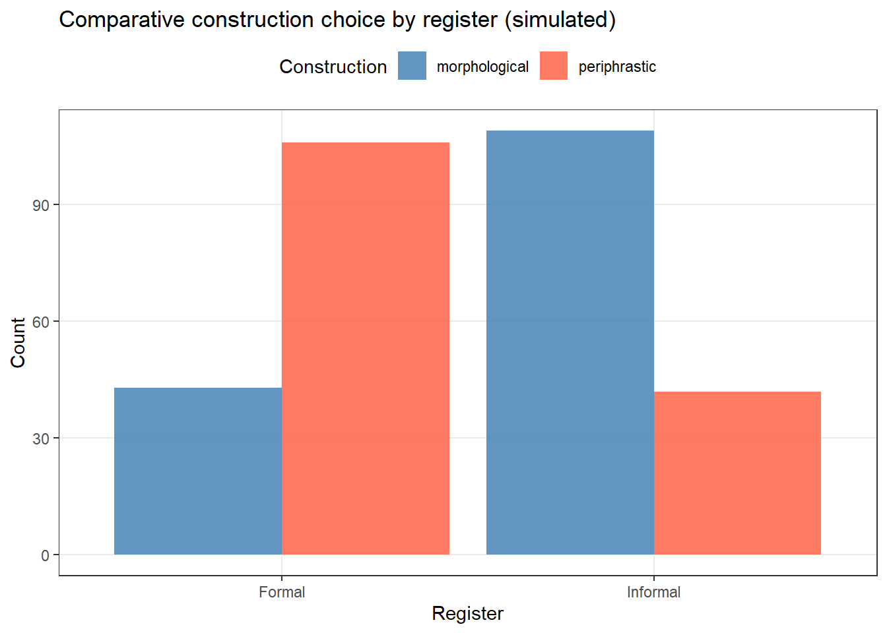
From Description to Inference
A cross-tabulation describes the data. To test whether the association between two categorical variables is statistically significant, we use a chi-square test of independence (chisq.test() in R). But that is inferential statistics — cross-tabulations are the descriptive foundation.
Exercises: Frequency Tables
Q1. A researcher finds the following construction counts: morphological = 110, periphrastic = 90. What proportion uses the periphrastic form?
Q2. In a cross-tabulation, prop.table(tab, margin = 1) computes
Data Visualisation for Description
Effective data visualisation is as important as numerical summaries. Graphs reveal patterns, outliers, and distributional shapes that tables cannot communicate. This section covers the most important plot types for descriptive purposes.
Boxplots
The boxplot (box-and-whisker plot) is the standard visualisation of the five-number summary: minimum, Q1, median, Q3, maximum. Outliers (values more than 1.5 × IQR beyond Q1 or Q3) are plotted individually.
Code
set.seed(42) rt_viz <-data.frame( RT =c(rnorm(80, 450, 70), rnorm(80, 520, 100)), Condition =rep(c("Congruent", "Incongruent"), each =80) ) rt_viz |>ggplot(aes(x = Condition, y = RT, fill = Condition)) +geom_boxplot(alpha =0.7, outlier.color ="red", outlier.shape =16) +theme_bw() +scale_fill_manual(values =c("steelblue", "tomato")) +labs(title ="Reaction times by condition (simulated)", y ="Reaction Time (ms)", x ="") +theme(legend.position ="none", panel.grid.minor =element_blank())
Violin Plots
The violin plot combines the boxplot’s summary statistics with the density plot’s distributional information. It is particularly useful when distributions are non-normal or multimodal.
Code
rt_viz |>ggplot(aes(x = Condition, y = RT, fill = Condition)) +geom_violin(alpha =0.6, trim =FALSE) +geom_boxplot(width =0.15, fill ="white", outlier.color ="red") +theme_bw() +scale_fill_manual(values =c("steelblue", "tomato")) +labs(title ="Violin + boxplot: reaction times by condition (simulated)", y ="Reaction Time (ms)", x ="") +theme(legend.position ="none", panel.grid.minor =element_blank())
Boxplot vs. Violin Plot
Use a boxplot when you want to emphasise the five-number summary and outliers, and when your audience is familiar with boxplots.
Use a violin plot (especially with embedded boxplot) when:
- The distribution shape matters (e.g., bimodal vs. unimodal)
- You want to show density alongside summary statistics
- You are comparing multiple groups and want to see distributional differences beyond spread
Bar Charts for Categorical Data
Bar charts are the standard visualisation for categorical (frequency) data. Use geom_bar() for raw data or geom_col() when you have pre-computed counts:
Code
# bar chart with error bars (mean ± SE) set.seed(42) bar_data <-data.frame( Group =rep(c("Group A", "Group B", "Group C"), each =30), Score =c(rnorm(30, 70, 10), rnorm(30, 75, 12), rnorm(30, 65, 8)) ) bar_summary <- bar_data |> dplyr::group_by(Group) |> dplyr::summarise( M =mean(Score), SE =sd(Score) /sqrt(n()), .groups ="drop" ) bar_summary |>ggplot(aes(x = Group, y = M, fill = Group)) +geom_col(alpha =0.8, width =0.6) +geom_errorbar(aes(ymin = M - SE, ymax = M + SE), width =0.2, linewidth =0.8) +coord_cartesian(ylim =c(55, 90)) +theme_bw() +scale_fill_manual(values =c("steelblue", "tomato", "seagreen")) +labs(title ="Mean scores by group with standard error bars", y ="Mean Score", x ="") +theme(legend.position ="none", panel.grid.minor =element_blank())
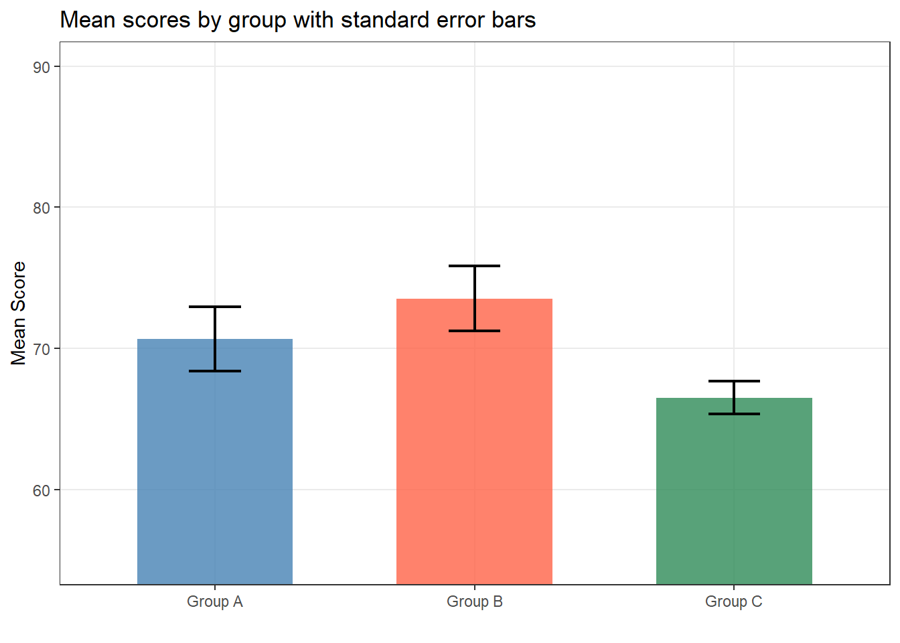
Scatterplots
A scatterplot visualises the relationship between two continuous variables. It is the standard first step in any correlation analysis.
Code
set.seed(42) scatter_data <-data.frame( Syllables =sample(1:4, 150, replace =TRUE), Periphrastic_pct =NA) scatter_data$Periphrastic_pct <-30- scatter_data$Syllables *5+rnorm(150, 0, 8) + scatter_data$Syllables *12+rnorm(150, 0, 5) scatter_data$Periphrastic_pct <-pmax(0, pmin(100, scatter_data$Periphrastic_pct)) scatter_data |>ggplot(aes(x = Syllables, y = Periphrastic_pct)) +geom_jitter(width =0.15, alpha =0.5, color ="steelblue") +geom_smooth(method ="lm", se =TRUE, color ="tomato", fill ="tomato", alpha =0.2) +theme_bw() +labs(title ="Adjective syllable count vs. periphrastic comparative use (simulated)", x ="Number of syllables", y ="% periphrastic comparative") +theme(panel.grid.minor =element_blank())
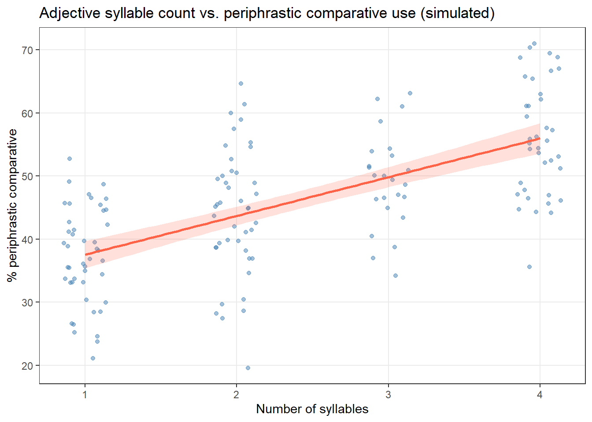
The regression line and confidence band summarise the trend: longer adjectives tend to use the periphrastic comparative more frequently — a well-established finding in the comparative literature.
Correlation
Correlation is one of the most commonly reported descriptive statistics for quantifying the strength and direction of a linear relationship between two continuous variables. It is important to note that correlation is a descriptive statistic — it quantifies an observed association, not a causal relationship.
Correlation ≠ Causation
A correlation between X and Y tells us they co-vary systematically. It does not tell us:
Whether X causes Y
Whether Y causes X
Whether a third variable Z causes both
Causal inference requires experimental design, not correlation alone.
Pearson’s r
Pearson’s product-moment correlation coefficient (r) measures the strength of a linear relationship between two normally distributed continuous variables.
# with significance test cor.test(syllables, periphrastic, method ="pearson")
Pearson's product-moment correlation
data: syllables and periphrastic
t = 18.50292682, df = 98, p-value < 0.0000000000000002220446
alternative hypothesis: true correlation is not equal to 0
95 percent confidence interval:
0.828865247590 0.918992703621
sample estimates:
cor
0.881733492037
Spearman’s ρ (rho)
Spearman’s rank correlation coefficient (ρ) is the non-parametric alternative to Pearson’s r. It measures the strength of a monotonic (not necessarily linear) relationship and is appropriate when:
The data are ordinal (e.g., Likert scale ratings, ranked judgements)
The data are continuous but non-normal (e.g., skewed frequency data)
Outliers are present that would distort Pearson’s r
Spearman’s ρ is calculated by ranking both variables and then computing Pearson’s r on the ranks.
Code
# Spearman correlation (more robust to skew and outliers) cor.test(syllables, periphrastic, method ="spearman")
Spearman's rank correlation rho
data: syllables and periphrastic
S = 16367.30305, p-value < 0.0000000000000002220446
alternative hypothesis: true rho is not equal to 0
sample estimates:
rho
0.901786360316
Correlation Matrices
When you have multiple variables and want to explore their pairwise relationships, a correlation matrix is efficient:
For a visually appealing correlation matrix, use the ggcorrplot package or ggpubr::ggscatter() for pairwise scatterplots:
Code
# pairwise scatterplot matrix with correlation coefficients pairs(corr_data, main ="Pairwise scatterplot matrix", pch =16, col =adjustcolor("steelblue", alpha.f =0.6), lower.panel =function(x, y, ...) { r <-round(cor(x, y), 2) par(usr =c(0, 1, 0, 1)) text(0.5, 0.5, paste0("r = ", r), cex =1.2, col =ifelse(abs(r) >0.3, "red", "gray40")) })
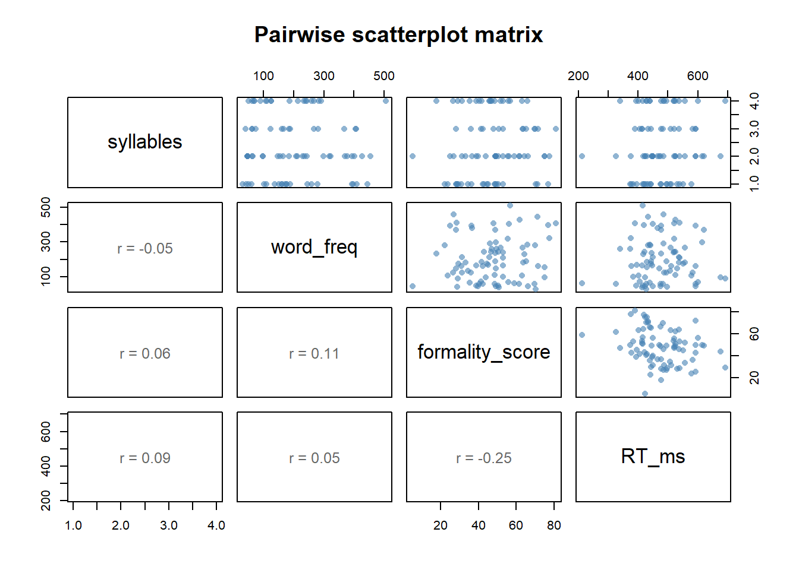
Exercises: Correlation
Q1. A researcher calculates Pearson’s r = −0.72 between adjective syllable count and the rate of morphological comparative use. What does this mean?
Q2. When should Spearman’s ρ be preferred over Pearson’s r?
Outlier Detection
Outliers are observations that deviate markedly from the rest of the data. They can arise from data entry errors, measurement problems, genuine extreme cases, or non-normal distributions. Detecting and understanding outliers is a critical part of descriptive analysis — they can distort means, inflate variances, and violate the assumptions of statistical tests.
Outliers: Exclude or Investigate?
Outliers should not be automatically removed. Before excluding any observation, ask:
Is it a data entry or measurement error? → Fix or exclude with justification
Is it a genuine extreme value from the population of interest? → Retain and report
Is it from a different population? (e.g., a non-native speaker in a native-speaker study) → Exclusion criterion should be defined a priori
Always report how many observations were identified as outliers and what decision was made. Transparency is essential.
Method 1: The Z-Score Method
A z-score expresses each value as the number of standard deviations from the mean. Values with \(|z| > 3\) are commonly flagged as potential outliers (corresponding to approximately the outer 0.3% of a normal distribution).
Code
set.seed(42) # simulate reading time data with one extreme outlier reading_times <-c(rnorm(99, mean =450, sd =80), 1850) # calculate z-scores z_scores <-scale(reading_times)[, 1] # identify outliers: |z| > 3 outliers_z <-which(abs(z_scores) >3) cat("Outliers (z-score method):", outliers_z, "\n")
The IQR method (Tukey’s fences) is more robust than the z-score approach because it does not depend on the mean or standard deviation, which are themselves distorted by outliers. An observation is flagged if it falls more than 1.5 × IQR below Q1 or above Q3.
The best way to identify and communicate outliers is visually:
Code
df_rt <-data.frame(RT = reading_times, is_outlier =abs(scale(reading_times)[,1]) >3) # boxplot: outliers shown as individual points p1 <- df_rt |>ggplot(aes(y = RT)) +geom_boxplot(fill ="steelblue", alpha =0.6, outlier.color ="red", outlier.size =3) +theme_bw() +labs(title ="Boxplot", y ="Reading Time (ms)", x ="") +theme(axis.text.x =element_blank(), axis.ticks.x =element_blank()) # dot plot: all points, outlier highlighted p2 <- df_rt |>ggplot(aes(x =seq_along(RT), y = RT, color = is_outlier)) +geom_point(alpha =0.6) +scale_color_manual(values =c("steelblue", "red"), labels =c("Normal", "Outlier")) +theme_bw() +labs(title ="Dot plot with outlier flagged", x ="Observation index", y ="Reading Time (ms)", color ="") +theme(legend.position ="top") # display side by side using cowplot plot_grid(p1, p2, ncol =2, rel_widths =c(0.35, 0.65))
Exercises: Outliers
Q1. A reaction time dataset has Q1 = 380ms, Q3 = 520ms, and IQR = 140ms. Using Tukey’s fences (1.5 × IQR), what is the upper fence above which values are flagged as outliers?
Q2. Why is the IQR method for detecting outliers generally preferred over the z-score method?
Quick Reference
Choosing the Right Descriptive Statistic
Question
Statistic
R function
What is the typical value?
Arithmetic mean
mean(x)
What is the typical value? (skewed/ordinal)
Median
median(x)
What is the most common category?
Mode
names(which.max(table(x)))
How spread out are the values?
Range or IQR
range(x); IQR(x)
How spread out? (robust to outliers)
IQR (interquartile range)
IQR(x)
How spread out? (for reporting with mean)
Standard deviation (SD)
sd(x)
How precise is my mean estimate?
Standard error (SE)
sd(x)/sqrt(length(x))
Is the distribution symmetric?
Skewness; Q-Q plot; histogram
e1071::skewness(x); qqnorm(x)
Are there extreme values?
Z-scores or IQR fences; boxplot
scale(x); IQR method
How strong is the relationship between two variables?
Pearson's r
cor(x, y, method='pearson')
How strong? (ordinal/non-normal data)
Spearman's ρ
cor(x, y, method='spearman')
Visualisation Cheat Sheet
Data type
Best plots
Single continuous variable
Histogram, density plot, boxplot
Continuous + grouping variable
Boxplot by group, violin plot, density overlay
Two continuous variables
Scatterplot (with regression line)
Single categorical variable
Bar chart, frequency table
Two categorical variables
Grouped bar chart, cross-tabulation, mosaic plot
Checking normality
Q-Q plot, histogram vs. normal curve
Checking for outliers
Boxplot, dot plot, z-score plot
Complete Workflow Checklist
Use this checklist every time you begin a new descriptive analysis:
Standard measures like the mean and standard deviation assume — or are strongly affected by — the presence of extreme values and departures from normality. Robust statistics are designed to remain informative even when these assumptions are violated. They are particularly important in linguistics, where corpus frequency data, reaction times, and judgement scores are routinely non-normal.
The Trimmed Mean
The trimmed mean discards a fixed percentage of the most extreme values at both ends of the distribution before calculating the mean. A common choice is the 5% trimmed mean (removing the bottom 5% and top 5% of values) or the 10% trimmed mean.
where \(x_{(i)}\) are the sorted values and \(k = \lfloor n \cdot \text{trim} \rfloor\) observations are dropped from each end.
Code
set.seed(42) # reaction times with a few extreme slow responses rt_skewed <-c(rnorm(95, mean =450, sd =70), c(1800, 1950, 2100, 1750, 1600)) # regular mean — inflated by outliers mean(rt_skewed)
[1] 523.679027955
Code
# 5% trimmed mean — more resistant mean(rt_skewed, trim =0.05)
[1] 464.198775463
Code
# 10% trimmed mean mean(rt_skewed, trim =0.10)
[1] 464.34869954
Code
# median for comparison median(rt_skewed)
[1] 468.706526469
The trimmed mean sits between the mean (inflated by outliers) and the median (which ignores all values except the central one). It is reported in psych::describe() as the trimmed column (10% trim by default).
Winsorisation
Winsorisation replaces extreme values with the nearest non-extreme value rather than discarding them. For example, in a 5% Winsorised dataset, all values below the 5th percentile are replaced with the 5th percentile value, and all values above the 95th percentile are replaced with the 95th percentile value.
Unlike trimming, Winsorisation retains the full sample size — important when data are scarce.
Code
library(DescTools) # Winsorise at 5th and 95th percentiles rt_winsorised <- DescTools::Winsorize(rt_skewed) # compare means cat("Original mean: ", round(mean(rt_skewed), 1), "\n")
The Median Absolute Deviation (MAD) is the most robust measure of variability. It is computed as the median of the absolute deviations from the median:
Because MAD uses the median twice, it is completely unaffected by extreme values. It is reported by psych::describe() as the mad column.
Code
# MAD is resistant to extreme values mad(rt_skewed, constant =1) # raw MAD (constant=1 gives actual median of |deviations|)
[1] 47.7335411062
Code
mad(rt_skewed) # scaled MAD (default: multiply by 1.4826 for consistency with SD)
[1] 70.7697480441
Code
# for comparison: SD is heavily inflated by the outliers sd(rt_skewed)
[1] 314.124563525
MAD vs. SD: When to Use Which
Measure
Use when
Standard deviation (SD)
Data are approximately normally distributed; parametric tests will be used
MAD
Data are skewed or contain outliers; non-parametric or robust methods are used
IQR
Reporting alongside median in summary tables; ordinal or skewed data
In published linguistics research, SD is still most commonly reported — but MAD and trimmed means are increasingly used in psycholinguistics and corpus work, where data rarely meet normality assumptions.
Exercises: Robust Measures
Q1. A reaction time dataset has a mean of 520 ms and a 10% trimmed mean of 470 ms. What does this discrepancy suggest?
Q2. Why is the MAD considered more robust than the standard deviation?
Working with Real Data: Loading, Inspecting, and Cleaning
All previous sections have used simulated data. In practice, you will be loading messy, real-world datasets from files. This section covers the practical workflow for importing data, getting an initial overview, and handling missing values — essential skills before any descriptive analysis.
Loading Data
The most common data formats in linguistics research are CSV files (comma-separated values) and Excel spreadsheets. The recommended approach is the readr package (part of tidyverse) for CSVs and readxl for Excel files.
Code
library(readr) library(readxl) # load a CSV file data_csv <- readr::read_csv("path/to/your/data.csv") # load an Excel file (specify sheet name or number) data_xlsx <- readxl::read_excel("path/to/your/data.xlsx", sheet =1) # base R alternative for CSVs data_base <-read.csv("path/to/your/data.csv", stringsAsFactors =FALSE)
read_csv() vs. read.csv()
Prefer readr::read_csv() over base R’s read.csv() because it:
Does not convert strings to factors by default (no need for stringsAsFactors = FALSE)
Reads files faster for large datasets
Reports a column specification summary so you can verify that columns were parsed correctly
Creates a tibble (tidyverse data frame) with cleaner printing behaviour
Getting an Initial Overview
Before computing any statistics, always inspect your data structure:
Code
# create a realistic linguistics dataset to demonstrate set.seed(42) n <-120linguistics_corpus <-data.frame( text_id =paste0("T", sprintf("%03d", 1:n)), register =sample(c("Spoken", "Written", "CMC"), n, replace =TRUE), word_count =round(rnorm(n, 850, 300)), TTR =round(runif(n, 0.3, 0.8), 3), # type-token ratio mean_wl =round(rnorm(n, 4.8, 0.9), 2), # mean word length in chars clauses_per_sent =round(rnorm(n, 2.1, 0.6), 1), speaker_age =c(round(rnorm(n -5, 35, 12)), rep(NA, 5)) # 5 missing values ) # 1. Check dimensions (rows × columns) dim(linguistics_corpus)
[1] 120 7
Code
# 2. Variable names and types str(linguistics_corpus)
text_id register word_count TTR
Length:120 Length:120 Min. : 3.000 Min. :0.301000000
Class :character Class :character 1st Qu.: 584.250 1st Qu.:0.388500000
Mode :character Mode :character Median : 806.500 Median :0.508500000
Mean : 829.025 Mean :0.523408333
3rd Qu.:1074.750 3rd Qu.:0.638250000
Max. :1557.000 Max. :0.790000000
mean_wl clauses_per_sent speaker_age
Min. :1.79000000 Min. :0.50000000 Min. : 5.0000000
1st Qu.:4.26750000 1st Qu.:1.50000000 1st Qu.:24.0000000
Median :4.82500000 Median :2.00000000 Median :34.0000000
Mean :4.86241667 Mean :2.00666667 Mean :33.2869565
3rd Qu.:5.38500000 3rd Qu.:2.50000000 3rd Qu.:42.0000000
Max. :7.19000000 Max. :3.40000000 Max. :66.0000000
NA's :5
The summary() output immediately reveals the 5 missing values (NA's: 5) in speaker_age — something you must address before computing means or running tests on that variable.
Handling Missing Values
Missing data (NA in R) are the rule rather than the exception in real linguistic datasets. R’s default behaviour is to propagate NA values: any arithmetic involving NA returns NA.
Code
# NA propagates through arithmetic mean(linguistics_corpus$speaker_age) # returns NA
[1] NA
Code
# solution: exclude NAs with na.rm = TRUE mean(linguistics_corpus$speaker_age, na.rm =TRUE)
complete.cases() returns a logical vector: TRUE for rows with no missing values, FALSE for rows with at least one NA.
Code
# how many complete cases? sum(complete.cases(linguistics_corpus))
[1] 115
Code
# filter to complete cases only corpus_complete <- linguistics_corpus[complete.cases(linguistics_corpus), ] nrow(corpus_complete)
[1] 115
Missing Data: Do Not Simply Delete
Listwise deletion (removing any row with an NA) is the default in most R functions, but it is not always the best approach:
If data are Missing Completely at Random (MCAR): deletion is unbiased but reduces sample size
If data are Missing at Random (MAR) or Missing Not at Random (MNAR): deletion introduces bias
Advanced techniques — multiple imputation (mice package), maximum likelihood estimation, or mixed models — handle missing data more appropriately. Always report the number of missing values and your handling strategy in your methods section.
Checking Data Quality
Before analysing, always check for impossible or suspicious values:
Code
# check for impossible values (e.g., negative word counts or TTR > 1) sum(linguistics_corpus$word_count <0) # should be 0
[1] 0
Code
sum(linguistics_corpus$TTR >1) # should be 0
[1] 0
Code
# check range of each numeric variable sapply(linguistics_corpus[, sapply(linguistics_corpus, is.numeric)], range, na.rm =TRUE)
# check factor/character levels for typos table(linguistics_corpus$register)
CMC Spoken Written
27 49 44
This last step catches a very common problem: data entry inconsistencies such as "spoken" and "Spoken" being treated as different categories. Always inspect categorical variable levels before analysis.
Exercises: Real Data Workflow
Q1. You load a dataset and run mean(data$age) but get NA as the result. What is the most likely cause and solution?
Q2. Which function returns TRUE for rows in a data frame that have NO missing values in any column?
Q3. After loading a dataset, you find the register column has levels: ‘Formal’, ‘formal’, ‘FORMAL’, ‘Informal’, ‘informal’. What is the problem and how should you fix it?
Effect Sizes as Descriptive Statistics
Effect size statistics describe the magnitude of a difference or association in a way that is independent of sample size. While p-values only tell us whether an effect is statistically distinguishable from zero, effect sizes tell us how large the effect is — information that is essential for interpreting whether a finding is practically meaningful.
Why Effect Sizes Matter
A study with N = 10,000 participants can detect effects so tiny they are meaningless in practice. A study with N = 20 may miss a large, genuine effect. The p-value conflates effect size with sample size. Effect sizes do not.
Reporting effect sizes is now required by most major journals in linguistics, psychology, and the language sciences, following guidelines from the APA Publication Manual (7th edition) and initiatives such as the Open Science Framework.
Cohen’s d for Comparing Two Means
Cohen’s d measures the standardised difference between two group means — the difference in means expressed in units of the pooled standard deviation:
# using effectsize package if (!requireNamespace("effectsize", quietly =TRUE)) { install.packages("effectsize") } library(effectsize) effectsize::cohens_d(rt_incong, rt_cong)
Cohen's d | 95% CI
------------------------
0.98 | [0.57, 1.40]
- Estimated using pooled SD.
Pearson’s r as an Effect Size
When the relationship between two variables is the focus (rather than a group difference), Pearson’s r itself serves as an effect size. The benchmarks are:
r
< 0.10
Negligible
0.10
Small
0.30
Medium
0.50
Large
Pearson’s r and Cohen’s d are mathematically related:
\[r = \frac{d}{\sqrt{d^2 + 4}}\]
Eta-squared (η²) for ANOVAs
Eta-squared (η²) is the effect size for one-way ANOVA. It represents the proportion of total variance accounted for by the grouping variable:
set.seed(42) # three register groups with different mean sentence lengths sent_length <-c(rnorm(40, 18, 5), rnorm(40, 25, 6), rnorm(40, 12, 4)) register_grp <-rep(c("Spoken", "Written", "CMC"), each =40) # one-way ANOVA aov_result <-aov(sent_length ~ register_grp) summary(aov_result)
Df Sum Sq Mean Sq F value Pr(>F)
register_grp 2 3558.08855 1779.044276 64.6461 < 0.000000000000000222 ***
Residuals 117 3219.81034 27.519746
---
Signif. codes: 0 '***' 0.001 '**' 0.01 '*' 0.05 '.' 0.1 ' ' 1
Code
# eta-squared via effectsize package effectsize::eta_squared(aov_result)
# Effect Size for ANOVA
Parameter | Eta2 | 95% CI
----------------------------------
register_grp | 0.52 | [0.42, 1.00]
- One-sided CIs: upper bound fixed at [1.00].
Exercises: Effect Sizes
Q1. A study reports a statistically significant difference in reaction times between two conditions (p = .03) with Cohen’s d = 0.08. How should you interpret this?
Q2. What is the key advantage of reporting effect sizes alongside p-values?
Reporting Descriptive Statistics
Knowing how to compute descriptive statistics is only half the skill. Knowing how to report them clearly and consistently is equally important. This section summarises the conventions used in linguistics and adjacent fields.
General Principles
APA-Style Reporting Guidelines
The APA Publication Manual (7th edition) provides the most widely used conventions in linguistics and psychology:
Report mean and SD for continuous normally distributed variables: M = 450 ms, SD = 82 ms
Report median and IQR for skewed or ordinal data: Mdn = 430 ms, IQR = 95 ms
Round to two decimal places for most statistics; use fewer when precision is not meaningful
Report sample size (n) for every group
Include effect sizes alongside inferential statistics: t(58) = 3.12, p = .003, d = 0.81
For proportions: n = 42 out of 120 (35.0%)
Use italics for statistical symbols: M, SD, p, t, r, n
A Model Reporting Paragraph
Here is an example of a well-written descriptive statistics paragraph for a linguistics study:
Reaction times were recorded for 60 participants (30 per condition). In the congruent condition, mean RT was M = 442 ms (SD = 74 ms, Mdn = 431 ms); in the incongruent condition, M = 518 ms (SD = 88 ms, Mdn = 504 ms). RT distributions in both conditions were approximately normal (Shapiro-Wilk: congruent W = 0.97, p = .43; incongruent W = 0.96, p = .29), and no outliers were identified (all values within ±3 SD of the group mean). Four participants were excluded prior to analysis due to error rates exceeding 30%.
Notice what this paragraph includes:
Sample size per group
Mean and SD (primary) plus median (secondary, as a robustness check)
Normality check with test statistic and p-value
Outlier handling procedure
Exclusion criteria and number excluded
A Model Results Table
For multiple groups or variables, a table is clearer than prose:
Q1. A researcher writes: “The mean response time was 487ms.” What crucial information is missing?
Q2. For a 7-point Likert scale measuring attitude, which statistics should be reported?
Schweinberger, Martin. 2026. Descriptive Statistics with R. Brisbane: The University of Queensland. url: https://ladal.edu.au/tutorials/dstats/dstats.html (Version 2026.02.11).
@manual{schweinberger2026dstats,
author = {Schweinberger, Martin},
title = {Descriptive Statistics with R},
note = {https://ladal.edu.au/tutorials/dstats/dstats.html},
year = {2026},
organization = {The University of Queensland, Australia. School of Languages and Cultures},
address = {Brisbane},
edition = {2026.02.11}
}
Bickel, Peter J, and Erich L Lehmann. 2012. “Descriptive Statistics for Nonparametric Models IV. Spread.” In Selected Works of EL Lehmann, 519–26. Springer. https://doi.org/https://doi.org/10.1007/978-1-4614-1412-4_45.
Gaddis, Gary M, and Monica L Gaddis. 1990. “Introduction to Biostatistics: Part 2, Descriptive Statistics.”Annals of Emergency Medicine 19 (3): 309–15. https://doi.org/https://doi.org/10.1016/s0196-0644(05)82052-9.